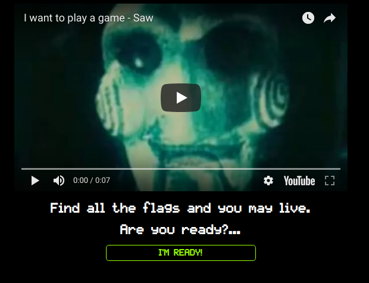
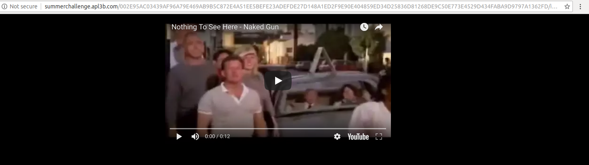
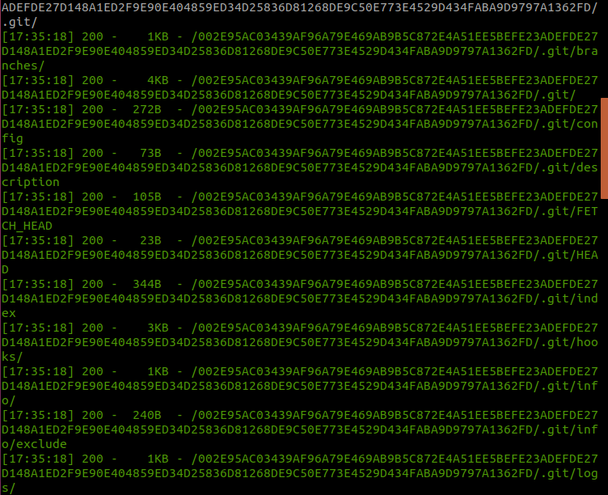
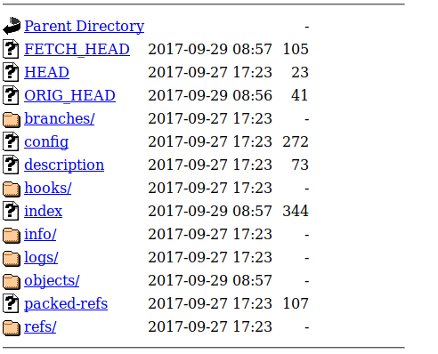
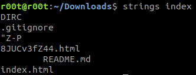
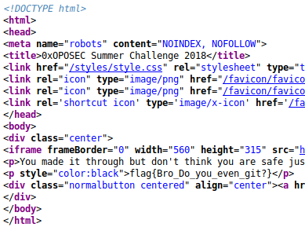

Have a l00k
This first challenge was all about having a l00k(literally).
They gave
an URL to work with. When I opened the page I saw a video and a button.

I pressed that button and the website redirected to another page as
shown below.The new page
contained a video and nothing more. I noticed that the URL was diferent so maybe that would mean something.

I decided to run dirsearch
and I found
a git repo with some interesting content such has index. I checked all the files, but the index was the
file that caught my attention.
 
Next thing I did was to download index file to my Desktop. After
that I used "strings" to see if there was anything useful for me. The result from "strings" is down below
and shows us one page(8JUCv3fZ44.html).

Copied and pasted the output link and then another page with a
video of Jigsaw is shown. Hmmmm but how about the flag?
Well, I tried to see if there was anything in the source code, and we got our flag.

flag{Bro_Do_you_even_git?}